作为一个非IT从业人员，我无法对Python做出什么实质性的评价。我最直接的感受就是把它当做一门工具来看待。它的生态十分庞大(以至于不同的第三方库之间的依赖关系十分复杂)，我们大可不必面面俱到掌握，需要实现什么，就去学习相关的内容即可。正是秉持着这样的想法，我在与Python打交道的过程中进行了一些系统的总结——因为我也是从一个小白开始接触Python的，也希望能够为其他的小白们提供一套体系去上手。当然，关于Python的分享我主要是在我的个人公众号上进行，这个网页只是对公众号内容的搬运，也作为一种分享的渠道。
扫码关注我的公众号
在Python领域有一首十分有趣的诗——Python之禅(The Zen of Python)，它反映了Python的设计哲学——Python是一种追求优雅，明确，简单的编程语言。其内容如下(也可以通过在cmd窗口运行Python后通过import this查看内容)：
Beautiful is better than ugly.（优美胜于丑陋——Python 以编写优美的代码为目标）
Explicit is better than implicit.（明了胜于晦涩——优美的代码应当是明了的,命名规范,风格相似）
Simple is better than complex.（简洁胜于复杂——优美的代码应当是简洁的,不要有复杂的内部实现）
Complex is better than complicated.（复杂胜于凌乱——如果复杂不可避免，那代码间也不能有难懂的关系,要保持接口简洁）
Flat is better than nested.（扁平胜于嵌套——优美的代码应当是扁平的,不能有太多的嵌套）
Sparse is better than dense.（间隔胜于紧凑——优美的代码有适当的间隔,不要奢望一行代码解决问题）
Readability counts.（可读性很重要——优美的代码是可读的）
Special cases aren't special enough to break the rules.（即便假借特例的实用性之名,，也不可违背这些规则——这些规则至高无上）
Although practicality beats purity.
Errors should never pass silently.（不要包容所有错误,除非你确定需要这样做——精准地捕获异常,不写 except:pass 风格的代码）
Unless explicitly silenced.
In the face of ambiguity, refuse the temptation to guess.（当存在多种可能，不要尝试去猜测）
There should be one --and preferably only one --obvious way to do it.（而是尽量找一种,最好是唯一一种明显的解决方案——如果不确定,就用穷举法）
Although that way may not be obvious at first unless you're Dutch.（虽然这并不容易,因为你不是 Python 之父——这里的 Dutch 是指 Guido ）
Now is better than never.
Although never is often better than right now.（做也许好过不做,但不假思索就动手还不如不做——动手之前要细思量）
If the implementation is hard to explain, it's a bad idea.
If the implementation is easy to explain, it may be a good idea.（如果你无法向人描述你的方案,那肯定不是一个好方案;反之亦然——方案测评标准）
Namespaces are one honking great idea – let's do more of those!（命名空间是一种绝妙的理念,我们应当多加利用——倡导与号召）
● Python程序设计入门
● 海气数据可视化
#Part 1——可视化常用库介绍
| 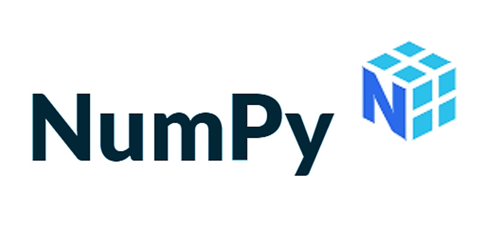 | NumPy库(一)——ndarray数组介绍 |
|---|---|
| Pandas库(一)——Series与DataFrame类型简介 | |
| 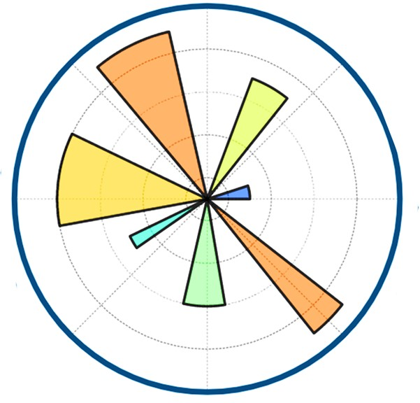 | Matplotlib之pyplot(一)——基本绘图类型简介 |
| 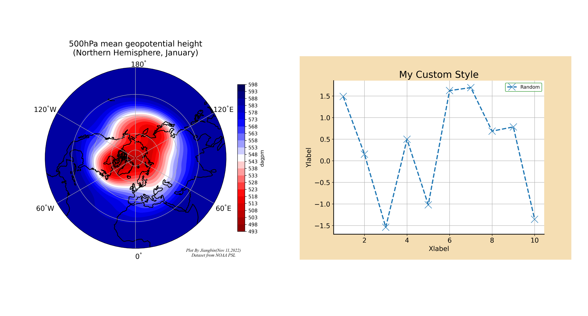 | Matplotlib(三)——绘图风格和颜色的选取 |
| Numpy库(二)——数学运算与文件处理 | |
| Pandas库(二)——文件操作与数据清洗 | |
| 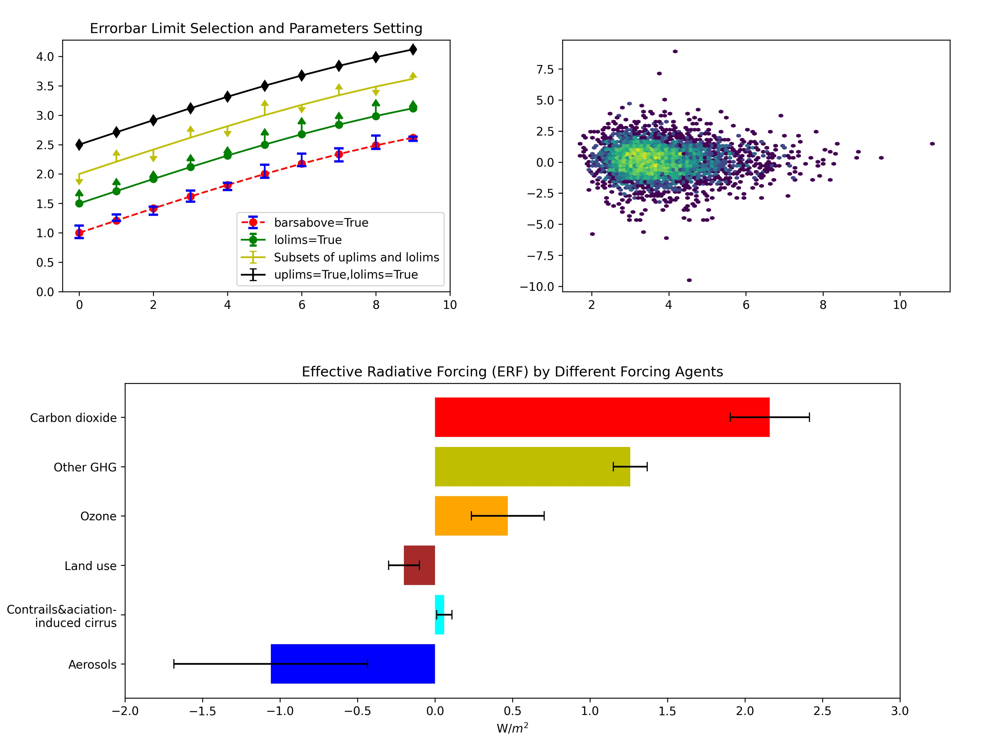 | Matplotlib之pyplot(二)——常用统计绘图 |
| 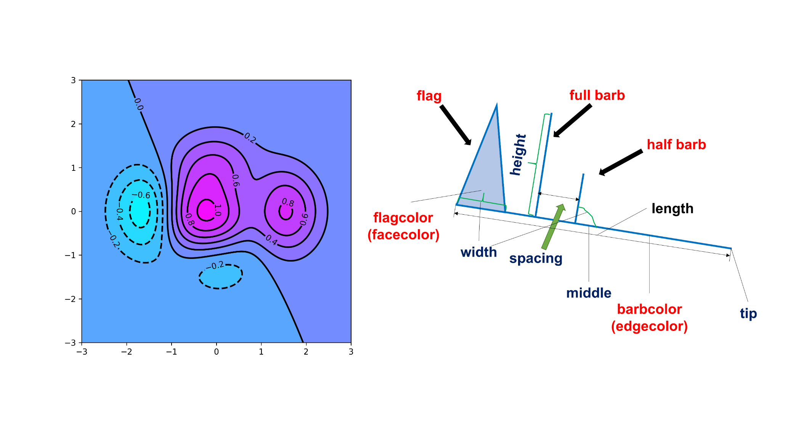 | Matplotlib(四)——数量场与向量场绘图 |
#Part 2——海气数据可视化初步
| 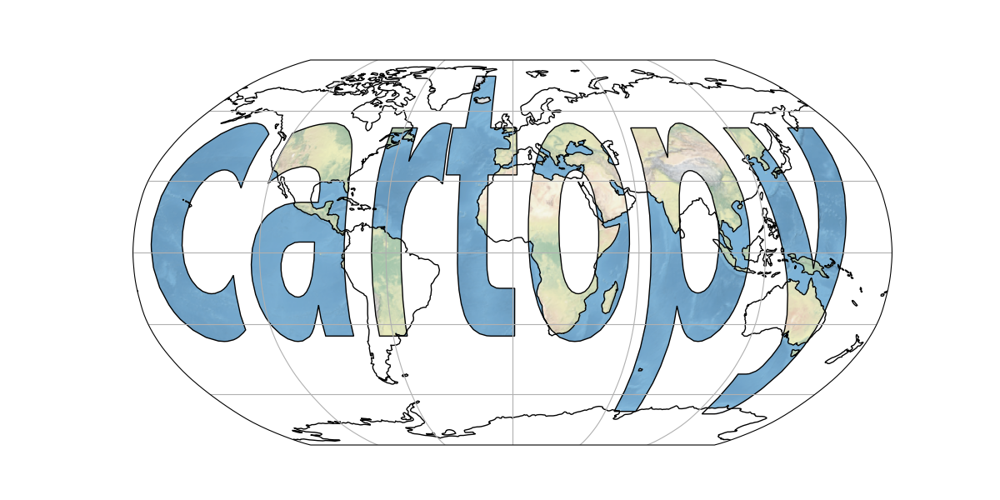 | 地理可视化库——Cartopy |
|---|---|
| 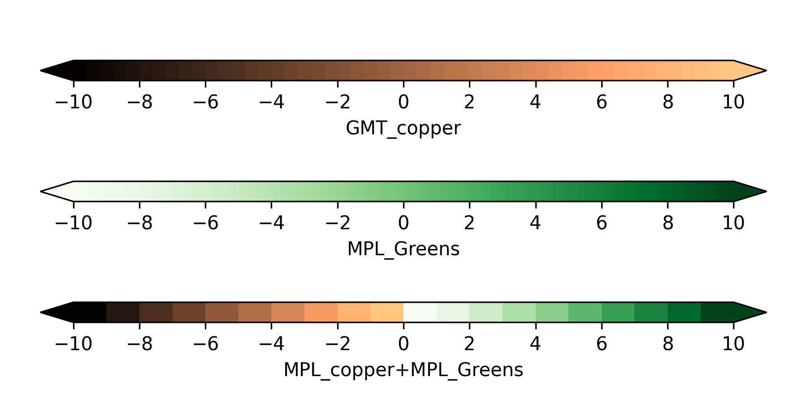 | Colorbar的设置与使用 |
| 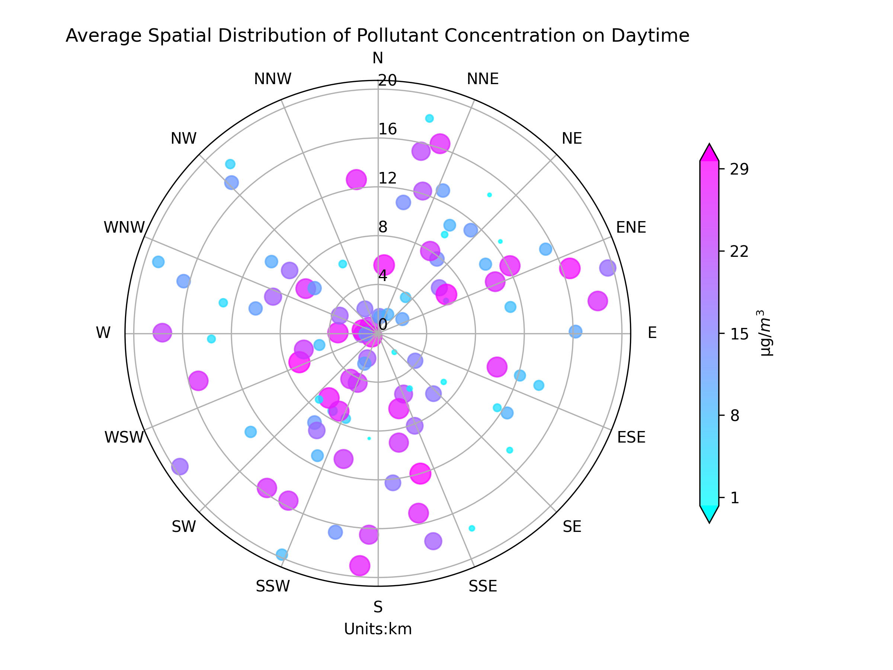 | 极坐标图与极射赤面投影图的绘制 |
| 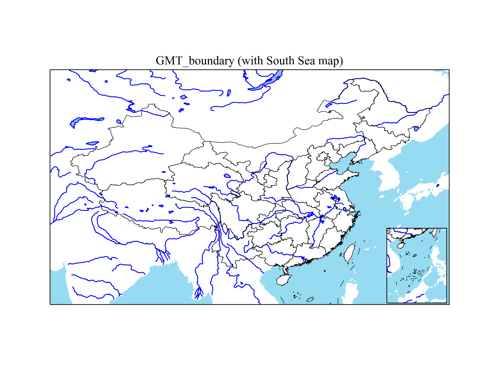 | 中国地图的有关绘制 |
|---|---|
| 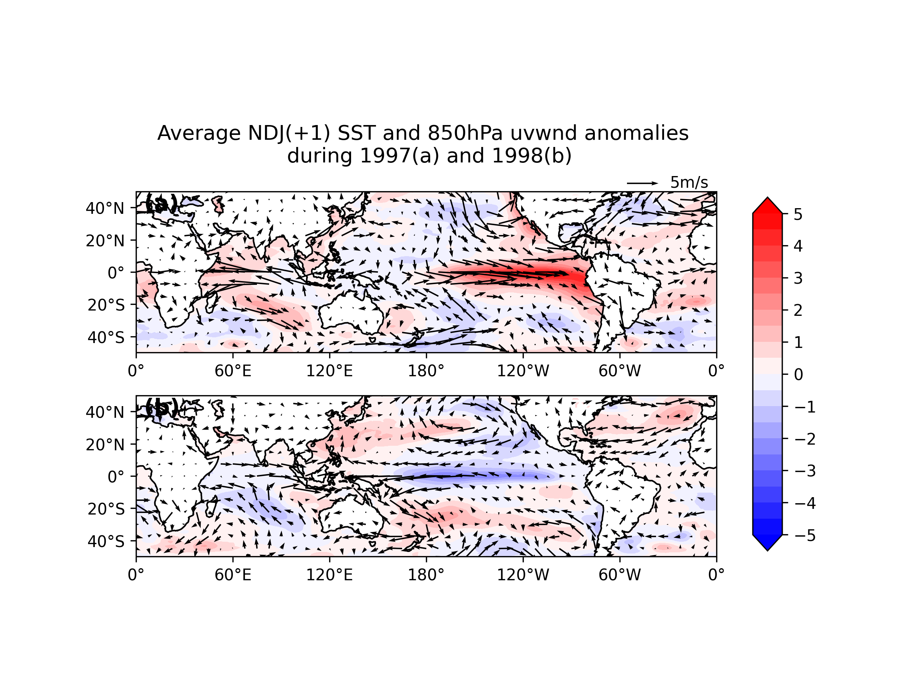 | NetCDF(Network Common Data Form)文件处理与可视化 |
| 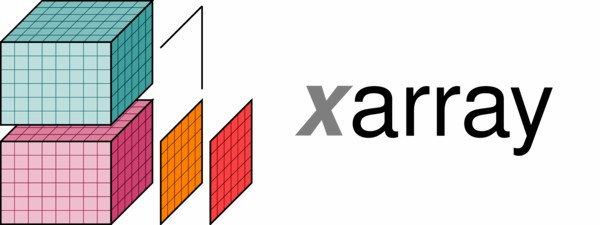 | 新一代NC文件处理库——xarray简介 |